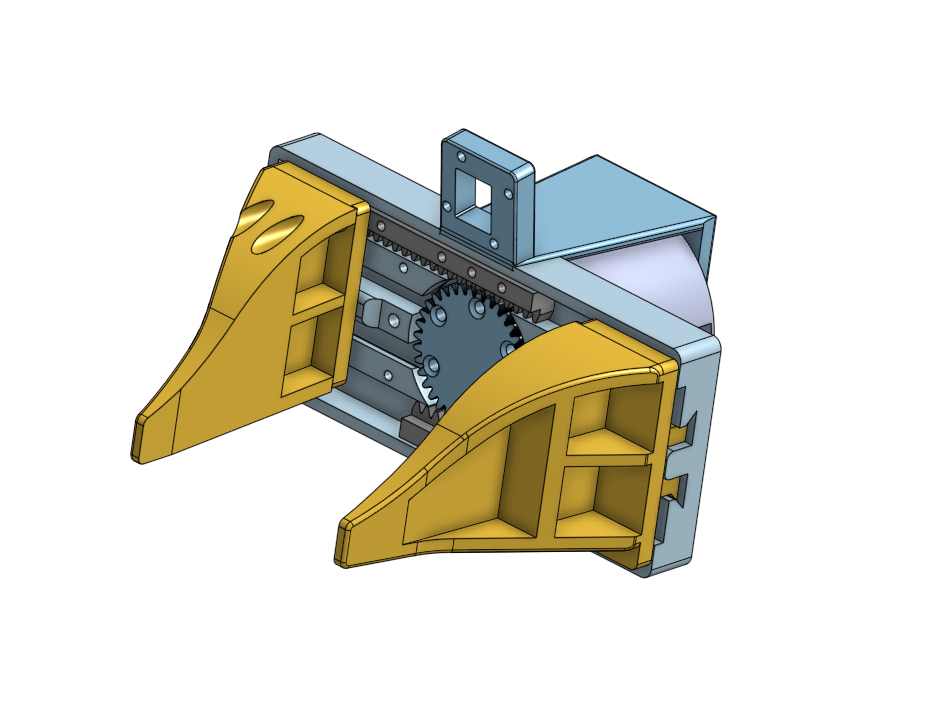
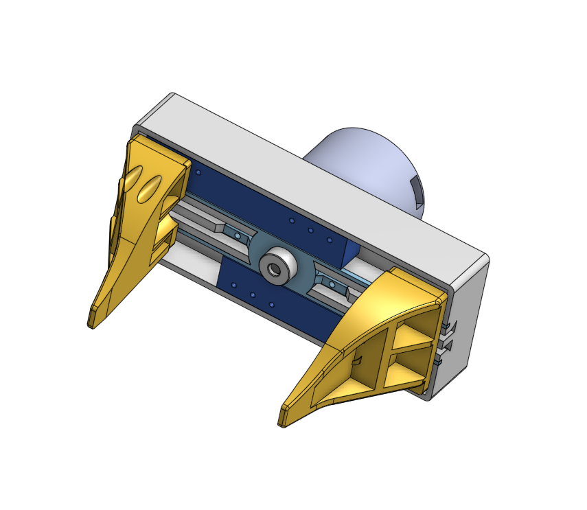

Mechatronics Intern @ Kovari Industries


Designed and built a rack and pinion gripper from scratch in Onshape, combining off the shelf spur gears and gear racks with 3D printed components to improve gripper reliability by 25 percent. Writes CAM programs in Fusion 360 and operates the CNC machine to manufacture parts in house through rapid prototyping and laser cutting, applying DFM principles to keep parts manufacturable on the shop floor. Collaborates cross functionally within a team of 10 software and mechatronics engineers, calibrating gripper sensors and managing parts inventory and BOM. Engineered glue free cable securement mounts for motor attachments, reducing sudden operational failures by 30 percent.